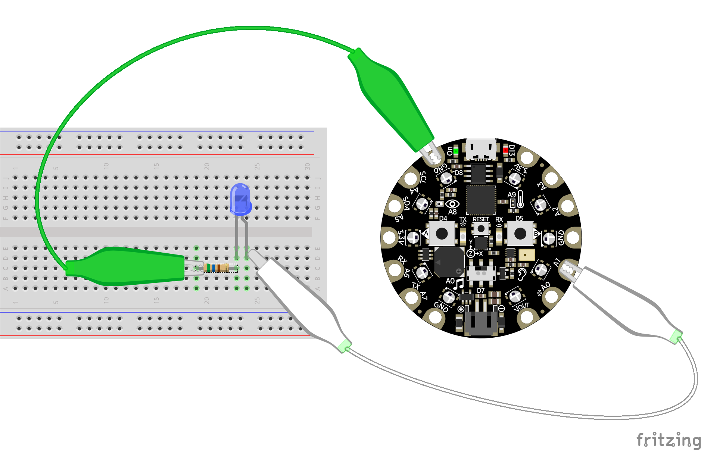
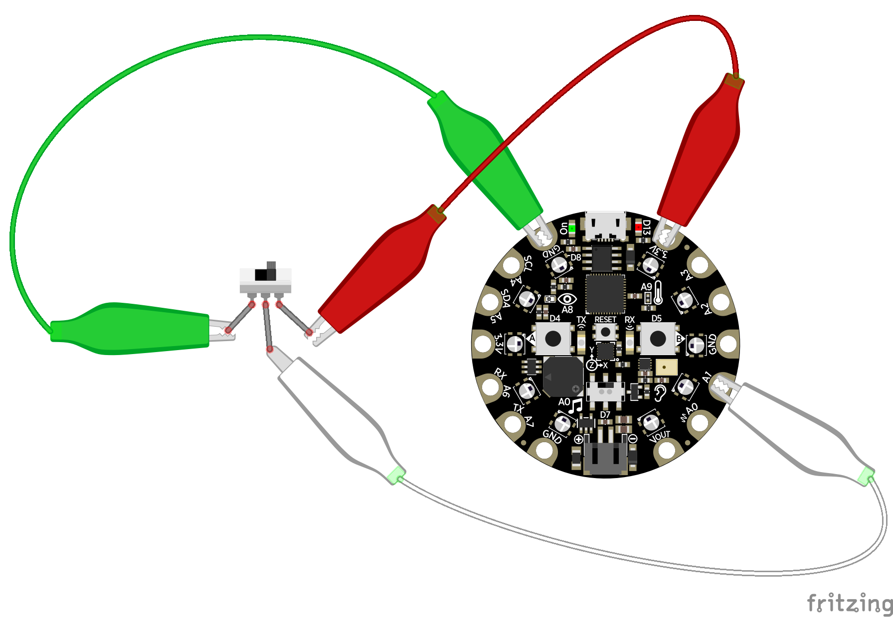
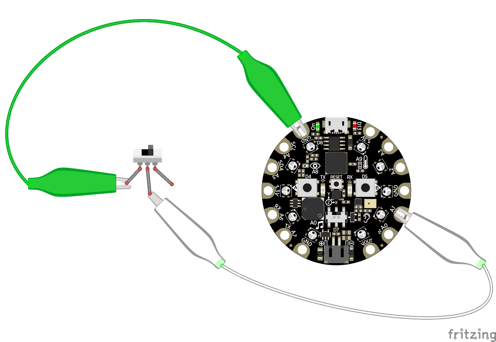

1. Digital Inputs & Outputs¶
Digital inputs and outputs (or I/O) are some of the simplest and most powerful ways to interact with hardware. Using digital I/O you can talk to devices with simple on and off signals, like turning a LED on/off or reading if a button is pressed. In CircuitPython using digital I/O is easy with a few modules that this guide will explore.
1.1. Digital Signals¶
Before diving in to how to digital I/O works you’ll want to understand what is a digial signal. In the simplest sense a digital signal is a simple on or off signal–i.e. there are only two possible states for the signal to be in. Think of this almost like a binary digit that’s either 0 or 1. With a digital signal it can only ever be 0/off or 1/on, there is no in-between!
At a physical level digital signals are represented with high and low voltage levels. A digital signal that’s on will be at a ‘high’ voltage level, typically 3.3 volts or more (depending on the specifications of your microprocessor or development board), and a signal that’s off will be at a ‘low’ voltage level of zero volts (also called ground). You can actually see this voltage with a multimeter set to measure DC voltage–try connecting a multimeter to a button or LED and watch the voltage as digital signal changes from on to off and vice-versa.
1.2. Examples of Digital Signals¶
What can you do with a digital signal? It turns out quite a few interesting components are controlled with simple on/off digital I/O!
Digital inputs:
- Buttons and switches
- Magnetic or hall-effect sensors
- PIR motion sensors
- Simple vibration sensors
- Beam-break sensors
- Liquid level sensors
- Tilt switches
- Simple wireless remote controls
Digital outputs:
- Single color LEDs
- Relays to control high-power devices
- Solenoids that push or pull objects
- Vibration motors
- Buzzers (not piezo buzzers that require an analog signal though!)
In addition to devices like the above you can also use digital signals for simple communication between two devices. A digital output of one device, like your development board, can be connected to another device’s digital input, like an audio FX board that plays music and sound effects. There are even fast protocols like I2C or SPI for sending large amounts of data over a digital signal, but we’ll cover those in a later guide.
1.3. Board Pins¶
To use digital I/O you need to learn how to access the pins on your board. These are the physical points where you connect wires to access the digital signals. On some boards, like Arduino Zero and Metro M0, the digital I/O pins are exposed with female headers that work well with breadboard-friendly hookup wires. On other boards like Circuit Playground Express and Gemma M0 the digital I/O pins are large copper pads with holes that are easy to connect to alligator clips or conductive thread. Check your board’s documentation to see where all of the digital I/O pins are located.
In CircuitPython you use the board module to reference digital I/O pins. The
board module contains an object for each pin on the board and they’re
typically named after labels on the board. You can list all of the pins in the
board module with Python’s dir function, for example from a
board’s REPL run:
>>> import board
>>> dir(board)
['A0', 'SPEAKER', 'A1', 'A2', 'A3', 'A4', 'SCL', 'A5', 'SDA', 'A6', 'RX',
'A7', 'TX', 'LIGHT', 'A8', 'TEMPERATURE', 'A9', 'BUTTON_A', 'D4', 'BUTTON_B',
'D5', 'SLIDE_SWITCH', 'D7', 'NEOPIXEL', 'D8', 'D13', 'REMOTEIN', 'IR_RX',
'REMOTEOUT', 'IR_TX', 'IR_PROXIMITY', 'MICROPHONE_SCK', 'MICROPHONE_DO',
'ACCELEROMETER_INTERRUPT', 'ACCELEROMETER_SDA', 'ACCELEROMETER_SCL',
'SPEAKER_ENABLE', 'SCK', 'MOSI', 'MISO', 'FLASH_CS']
Each of the objects returned by the dir command represents a named pin on the board. Above you see the output on a Circuit Playground Express board which has pins like A0, A1, D4, D5, etc. that represent pins that run around the diameter of the board. There are even named pins like BUTTON_A, BUTTON_B, and SLIDE_SWITCH that represent pins connected to components built-in to the board.
1.4. Digital Outputs¶
Controlling a digital output with CircuitPython is easy to do with a few lines of code. In fact you can connect to a board’s REPL and directly turn digital outputs on and off with a few simple commands.
An easy way to demonstrate digital outputs is with a simple single-color LED. You can connect a LED to a digital output of your board and turn it on or off by setting the output to a high or low voltage level. Remember digital outputs are only on or off and never in-between so you can’t control the brightness of the LED! To wire a LED to your board you’ll need these components:
- A single color LED. You want a simple single color LED and not a fancier multi-color LED or NeoPixel. Look for a LED that has two legs, a short one and long one. Check out the Adafruit LED guide for more details on LEDs.
- A resistor in the range of 300-1,000 ohms. You must use a resistor when wiring up a LED to your board or else you might damage the digital output on the board. The resistor limits the amount of current to the LED and prevents damage to the board or LED. The exact value of the resistor isn’t super important for this demonstration–pick any resistor in the 300-1,000 ohm range.
- A breadboard and wires to connect the components and board together.
Connect the components to your board as follows:
- The short leg (cathode) of the LED connects to one end of the resistor.
- The other end of the resistor connects to the ground or GND pin of the board.
- The long leg (anode) of the LED connects to a digital output on your board.
Now connect to your board’s REPL and you can use the digitalio module
to control the digital output connected to the LED. Run the following code to
first import the necessary modules and create a
digitalio.DigitalInOut object for the pin (pin A1 in this example
but you can use any digital output from your board):
>>> import board
>>> import digitalio
>>> led = digitalio.DigitalInOut(board.A1)
The digitalio.DigitalInOut class is your gateway for controlling
both digital inputs and outputs. By default when you create an instance of one
it starts as a digital input, however you can call the
digitalio.DigitalInOut.switch_to_output() function to turn it into a
digital output:
>>> led.switch_to_output()
Once a digital output is created and initialized you simply change the value of
its digitalio.DigitalInOut.value property to turn the output on or
off. For example to turn the LED on set value to true:
>>> led.value = True
And to turn the LED off set value to false:
>>> led.value = False
Remember with digital signals you can only set them to on or off states, i.e. true or false values. There is no in-between or half on and half off!
Finally you can blink the LED by simply changing the value in a loop with a small delay:
>>> import time
>>> while True:
... led.value = True
... time.sleep(0.5)
... led.value = False
... time.sleep(0.5)
>>>
Remember in the REPL you need to press delete to de-indent the while loop and then press enter for it to see you’re done typing code in the loop! Alternatively press enter three times an CircuitPython will automatically close the loop and run it. You can press Ctrl-C to stop the loop from running with a keyboard interrupt exception.
1.5. Digital Inputs¶
Just like digital outputs, digital inputs are easy to control with a few lines of CircuitPython code. A great example of using digital inputs is reading the state of a button or switch. To do this you’ll need the following parts:
- A slide switch or toggle switch. These are switches that have three legs and physically connect one of the legs to another when the switch is flipped. You’ll see two different ways to wire this switch to your board–one that uses all three legs and another that uses just two legs.
- A breadboard and wires to connect the components and board together.
Wire up the switch to your board as follows:
- The middle leg or output of the switch is connected to one of the digital inputs of the board.
- Another leg of the switch is connected to the board’s ground or GND pin. When the switch is flipped to this position it will read a low digital logic signal.
- The opposite leg of the switch is connected to the board’s 3.3V output. You want to connect this switch to a voltage output that matches your board’s voltage for a high digital logic signal, typically 3.3V but sometimes 5V. When the switch is flipped to this position it will read a high digital logic signal.
Now connect to the board’s REPL and create a digital input object just like you saw previously with digital outputs. For example using pin A1 of a board:
>>> import board
>>> import digitalio
>>> switch = digitalio.DigitalInOut(board.A1)
By default digitalio.DigitalInOut objects are created as digital
inputs so you don’t need to do anything else to read the switch. However if you
were doing other things with the pin you can use the
digitalio.DigitalInOut.switch_to_input() function:
>>> switch.switch_to_input()
After a digital input object is created you simply read the
digitalio.DigitalInOut.value property to check if the input is at a
high or low logic level. If the value is a boolean true value it’s at a high
digital logic level and if it’s false it’s at a low digital logic level.
Try reading the switch state, for example you might see:
>>> switch.value
False
Then flip the switch to its opposite position and read it again:
>>> switch.value
True
Notice the value changed from false to true! This shows that the board first saw the digital input connected to ground or low digital logic level and then saw the input connected to 3.3V or high digital logic level. By flipping the switch you physicaly changed how the legs of the switch were connected to switch between high and low levels!
Remember you can use boolean values in conditional statements, like to print out a message if the switch is turned on:
>>> if switch.value:
... print("Switch is on!")
... else:
... print("Switch is off!")
Switch is on!
There’s one other way to read the switch which only requires two of its legs to be connected to your board. This is useful to reduce the number of physical connections or to connect to momentary or push buttons that only have two legs. Change the wiring of the switch to look like:
- The middle leg or output of the switch is still connected to one of the digital inputs of the board.
- Another leg of the switch is connected to the board’s ground or GND pin.
The opposite leg of the switch remains disconnected–only two wires are connected to the switch. When the switch is wired like this it means it will read a ground or low logic level in one position, but what happens when it’s in the opposite position and not connected to anything on the board? This state is called ‘floating’ and the input will actually read random values–you might get a high or low logic level depending on the electrical noise around the pin!
Luckily there’s an easy way to prevent an input from floating by using special built-in pull-up or pull-down resistors available on most development board digital I/O pins. You can turn on a pull-up resistor that will bring the digital input up to a high digital logic level if nothing is connected to it. This prevents the input from floating and will instead read a high digital logic level. Then when the switch is flipped and connected to ground / low logic it will ‘overpower’ the small pull-up resistor and read a low digital logic level.
To enable a digital input with a pull-up (or pull-down) resistor you do so with
a parameter to the digitalio.DigitalInOut.switch_to_input() function:
>>> switch.switch_to_input(pull=digitalio.Pull.UP)
Now the digital input is configured with a pull-up resistor! Note that you can
instead specify a pull-down resistor (connected to ground / low digital logic
level) by setting the pull parameter to the digitalio.Pull.DOWN
value.
Once the input is configured with a pull-up resistor use the
digitalio.DigitalInOut.value attribute to read its value:
>>> switch.value
False
Then flip the switch and read its value again:
>>> switch.value
True
Notice the switch value changes depending on how the switch is flipped. When the switch connects to ground you’ll read a false or low digital logic level, and when the switch connects to nothing (i.e. is floating) you’ll read a true or high logic level because of the pull-up resistor connected internally to 3.3V.